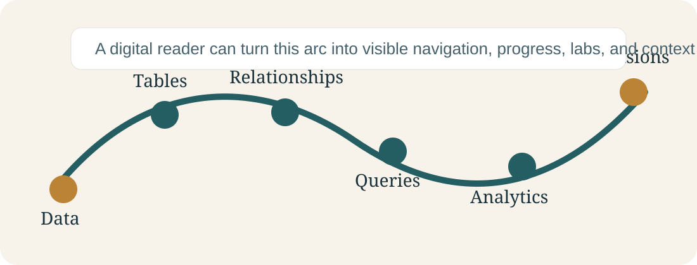

Book Purpose
Teach students how data becomes business performance
The prototype follows the manuscript's central logic: data becomes tables, tables become relationships, relationships make queries possible, and queries support analytics and decisions.
